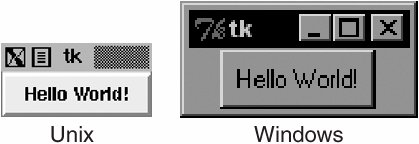

19.3. Tkinter Examples19.3.1. Label WidgetIn Example 19.1, we present tkhello1.py, the Tkinter version of "Hello World!" In particular, it shows you how a Tkinter application is set up and highlights the Label widget. Example 19.1. Label Widget Demo (tkhello1.py)
In the first line, we create our top-level window. That is followed by our Label widget containing the all-too-famous string. We instruct the packer to manage and display our widget, and finally call mainloop() to run our GUI application. Figure 19-1 shows what you will see when you run this GUI application. Figure 19-1. Tkinter Label widget (tkhello1.py)
19.3.2. Button WidgetThe next example is pretty much the same as the first. However, instead of a simple text label, we will create a button instead. In Example 19-2 is the source code for tkhello2.py. Example 19.2. Button Widget Demo (tkhello2.py)
The first few lines are identical. Things differ only when we create the Button widget. Our button has one additional parameter, the Tkinter.quit() method. This installs a callback to our button so that if it is pressed (and released), the entire application will exit. The final two lines are the usual pack() and entering of the mainloop(). This simple button application is shown in Figure 19-2. Figure 19-2. Tkinter Label widget (tkhello1.py) 19.3.3. Label and Button WidgetsWe combine tkhello1.py and tkhello2.py into tkhello3.py, a script that has both a label and a button. In addition, we are providing more parameters now than before when we were comfortable using all the default arguments that are automatically set for us. The source for tkhello3.py is given in Example 19.3. Example 19.3. Label and Button Widget Demo (tkhello3.py)
Besides additional parameters for the widgets, we also see some arguments for the packer. The fill parameter tells the packer to let the QUIT button take up the rest of the horizontal real estate, and the expand parameter directs the packer to visually fill out the entire horizontal landscape, stretching the button to the left and right sides of the window. As you can see in Figure 19-3, without any other instructions to the packer, the widgets are placed vertically (on top of each other). Horizontal placement requires creating a new Frame object with which to add the buttons. That frame will take the place of the parent object as a single child object (see the buttons in the listdir.py module, Example 19.6 in Section 19.3.6). Figure 19-3. Tkinter Label and Button widgets (tkhello3.py)
19.3.4. Label, Button, and Scale WidgetsOur final trivial example, tkhello4.py, involves the addition of a Scale widget. In particular, the Scale is used to interact with the Label widget. The Scale slider is a tool which controls the size of the text font in the Label widget. The greater the slider position, the larger the font, and the same goes for a lesser position, meaning a smaller font. The code for Example 19.4 Example 19.4. Label, Button, and Scale Demo (tkhello4.py)
New features of this script include a resize() callback function (lines 5-7), which is attached to the Scale. This is the code that is activated when the slider on the Scale is moved, resizing the size of the text in the Label. We also define the size (250 x 150) of the top-level window (line 10). The final difference between this script and the first three is that we import the attributes from the Tkinter module into our namespace with "from Tkinter import *." Although not recommended because it "pollutes" your namespace, we do it here mainly because this application involves a great number of references to Tkinter attributes. This would require use of their fully qualified names for each and every attribute access. By using the undesired shortcut, we are able to access attributes with less typing and have code that is easier to read, at some cost. As you can see from Figure 19-4, both the slider mechanism as well as the current set value show up in the main part of the window. Figure 19-4 shows the state of the GUI after the user moves the scale/slider to avalue of 36. Figure 19-4. Tkinter Label, Button, and Scale widgets (tkhello4.py)
As you can see from the code, the initial setting for the scale when the application starts is 12 (line 18). 19.3.5. Partial Function Application ExampleBefore looking a longer GUI application, we wanted to review the Partial Function Application (PFA) as introduced back in Section 11.7.3 of Chapter 11. PFAs were added to Python in version 2.5 and are one piece in a series of significant improvements in functional programming.
PFAs allow you to "cache" function parameters by effectively "freezing" those predetermined arguments, and then at runtime, when you have the remaining arguments you need, you can thaw them out, send in the final arguments, and have that function called with all parameters. Best of all, PFAs are not limited to just functions. They will work with any "callable," any object that has a functional interface just by using parentheses, i.e., classes, methods, or callable instances. The use of PFAs fits perfectly into a situation where there are many callables and many of the calls feature the same arguments over and over again. GUI programming makes a great use case because there is good probability that you want some consistency in GUI widget look-and-feel, and this consistency comes about when the same parameters are used to create like objects. We are now going to present an application where multiple buttons will have the same foreground and background colors. It would be a waste of typing to give the same arguments to the same instantiators every time we wanted a slightly different button: the foreground and background colors are the same, but only the text is slightly different. We are going to use traffic road signs as our example with our application attempts creating textual versions of road signs by dividing them up into various categories of sign types like critical, warning, or informational (just like logging levels). The type of the sign determines their color layout when the signs are created. For example, critical signs have the text in bright red with a white backdrop, warning signs are in black text on a goldenrod background, and informational or regulatory signs feature black text on a white background. We have the "Do Not Enter" and "Wrong Way" signs, which are both "critical," plus "Merging Traffic" and "Railroad Crossing," both of which are warnings. Finally, we have the regulatory "Speed Limit" and "One Way" signs. The application creates the "signs," which are just buttons. When users press the buttons, they just pop up the corresponding Tk dialog, critical/error, warning, or informational. It is not too exciting, but how the buttons are built is. You will find our application featured here in Example 19.5. Example 19.5. Road Signs PFA GUI Application (pfaGUI2.py)
When you execute this application, you will get a GUI that will look something like Figure 19.5. Figure 19-5. Road signs PFA GUI application on XDarwin in MacOS X (pfaGUI2.py)
Line-by-Line ExplanationLines 118We begin our application by importing functional.partial(), a few Tkinter attributes, and the Tk dialogs (lines 1-5). Next, we define some signs along with their categories (lines 7-18). Lines 2028The Tk dialogs are assigned as button callbacks, which we will use for each button created (lines 20-23). We then launch Tk, set the title, and create a QUIT button (lines 25-28). Lines 3033These lines represent our PFA magic. We use two levels of PFA. The first templatizes the Button class and the root window top. What this does is that every time we call MyButton, it will call Button (Tkinter.Button() creates a button.) with top as its first argument. We have "frozen" this into MyButton. The second level of PFA is where we use our first one, MyButton, and templatize that. We create separate button types for each of our sign categories. When users create a critical button CritButton (by calling it, e.g., CritButton()), it will then call MyButton along with the appropriate button callback and background and foreground colors, which means calling Button with top, callback, and colors. Do you see how it unwinds and goes down the layers until at the very bottom, it has the call that you would have originally had to make if this feature did not exist yet? We repeat with Warn-Button and ReguButton. Lines 3542With the setup completed, we look at our list of signs and create them. We put together a Python evaluatable string consisting of the correct button name, pass in the button label as the text argument, and pack() it. If it is a critical sign, then we CAPITALIZE the button text, otherwise we titlecase it. This last bit is done in line 39, demonstrating another feature introduced in Python 2.5, the temporary operator. Then we take each button creation string and execute it with eval(), creating the buttons one at a time and resulting in the graphic seen previously. Finally, we start the GUI by entering the main event loop. This application uses several Python 2.5 features, so you will not be able to run this with an older version. 19.3.6. Intermediate Tkinter ExampleWe conclude this section with a larger example, listdir.py. This application is a directory tree traversal tool. It starts in the current directory and provides a file listing. Double-clicking on any other directory in the list causes the tool to change to the new directory as well as replace the original file listing with the files from the new directory. The source code is given as Example 19.6. Example 19.6. File System Traversal GUI (listdir.py)
In Figure 19-6, we present what this GUI looks like in a Windows environment. Figure 19-6. List directory GUI application in Windows (listdir.py)
The Unix version of this application is given in Figure 19-7. Figure 19-7. List directory GUI application in Unix (listdir.py)
Line-by-Line ExplanationLines 15These first few lines contain the usual Unix startup line and importation of the os module, the time.sleep() function, and all attributes of the Tkinter module. Lines 913These lines define the constructor for the DirList class, an object that represents our application. The first Label we create contains the main title of the application and the version number. Lines 1519We declare a Tk variable named cwd to hold the name of the directory we are onwe will see where this comes in handy later. Another Label is created to display the name of the current directory. Lines 2129This section defines the core part of our GUI, (the Listbox) dirs, which contain the list of files of the directory that is being listed. A Scrollbar is employed to allow the user to move through a listing if the number of files exceeds the size of the Listbox. Both of these widgets are contained in a Frame widget. Listbox entries have a callback (setDirAndGo) tied to them using the Listbox bind() method. Binding means to tie a keystroke, mouse action, or some other event to a callback to be executed when such an event is generated by the user. setDirAndGo() will be called if any item in the Listbox is doubleclicked. The Scrollbar is tied to the Listbox by calling the Scrollbar.config() method. Lines 3134We then create a text Entry field for the user to enter the name of the directory he or she wants to traverse and see its files listed in the Listbox. We add a RETURN or Enter key binding to this text entry field so that the user can hit RETURN as an alternative to pressing a button. The same applies for the mouse binding we saw above in the Listbox. When the user doubleclicks on a Listbox item, it has the same effect as the user's entering the directory name manually into the text Entry field and pressing the "go" button. Lines 3653We then define a Button frame (bfm) to hold our three buttons, a "clear" button (clr), a "go" button (ls), and a "quit" button (quit). Each button has its own different configuration and callbacks, if pressed. Lines 5557The final part of the constructor initializes the GUI program, starting with the current working directory. Lines 5960The clrDir() method clears the cwd Tk string variable, which contains the current directory that is "active." This variable is used to keep track of what directory we are in and, more important, helps keep track of the previous directory in case errors arise. You will notice the ev variables in the callback functions with a default value of None. Any such values would be passed in by the windowing system. They may or may not be used in your callback. Lines 6269The setDirAndGo() method sets the directory to traverse to and issues the call to the method that makes it all happen, doLS(). Lines 71108doLS() is, by far, the key to this entire GUI application. It performs all the safety checks (e.g., is the destination a directory and does it exist?). If there is an error, the last directory is reset to be the current directory. If all goes well, it calls os.listdir() to get the actual set of files and replaces the listing in the Listbox. While the background work is going on to pull in the new directory's information, the highlighted blue bar becomes bright red. When the new directory has been installed, it reverts to blue. Lines 110115The last pieces of code in listdir.py represent the main part of the code. main() is executed only if this script is invoked directly, and when main() runs, it creates the GUI application, then calls mainloop() to start the GUI, which is passed control of the application. We leave all other aspects of the application as an exercise to the reader, recommending that it is easier to view the entire application as a combination of a set of widgets and functionality. If you see the individual pieces clearly, then the entire script will not appear as daunting. We hope that we have given you a good introduction to GUI programming with Python and Tkinter. Remember that the best way to get familiar with Tkinter programming is by practicing and stealing a few examples! The Python distribution comes with a large number of demonstration applications that you can study. If you download the source code, you will find Tkinter demo code in Lib/lib-tk, Lib/idlelib, and Demo/tkinter. If you have installed the Win32 version of Python and C:\Python2x, then you can get access to the demo code in Lib\lib-tk and Lib\idlelib. The latter directory contains the most significant sample Tkinter application: the IDLE IDE itself. For further reference, there are several books on Tk programming, one specifically on Tkinter. |